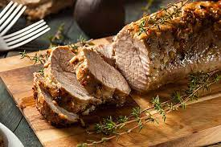

Delicious Pork Tenderloin

The Dish
Pork tenderloin is a lean, tender cut of pork that comes from the muscle that runs along the backbone of the pig. It is usually sold as a long, thin piece of meat, and it is generally very lean and tender, making it a popular choice for grilling, roasting, and pan-frying. Pork tenderloin can be prepared in a variety of ways, such as marinated and grilled, breaded and pan-fried, or roasted with vegetables. It can also be sliced and used in dishes like stir-fries or sandwiches. Because it is lean, it is important not to overcook pork tenderloin, as it can become dry and tough if cooked for too long. It is typically cooked to an internal temperature of 145°F (63°C) and allowed to rest for a few minutes before serving
Required Ingredients
- 1 pound pork tenderloin
- 1 tablespoon olive oil
- 1/2 teaspoon salt
- 1/4 teaspoon pepper
- 1 teaspoon dried thyme
- 1/2 teaspoon garlic powder
- 1/2 teaspoon onion powder
Step by Step Guide
- Preheat your oven to 400°F (200°C).
- In a small bowl, mix together the salt, pepper, thyme, garlic powder, and onion powder.
- Rub the pork tenderloin with the olive oil and then coat it evenly with the spice mixture.
- Place the pork tenderloin in a baking dish and roast it in the preheated oven for 25-30 minutes, or until it reaches an internal temperature of 145°F (63°C).
- Remove the pork tenderloin from the oven and let it rest for a few minutes before slicing it into thin slices.
- Serve the pork tenderloin hot, with your choice of sides such as mashed potatoes, roasted vegetables, or a salad. Enjoy!